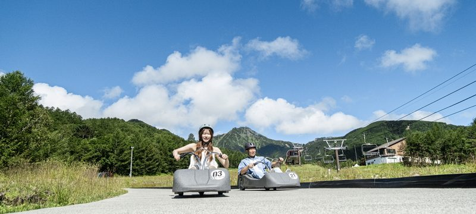
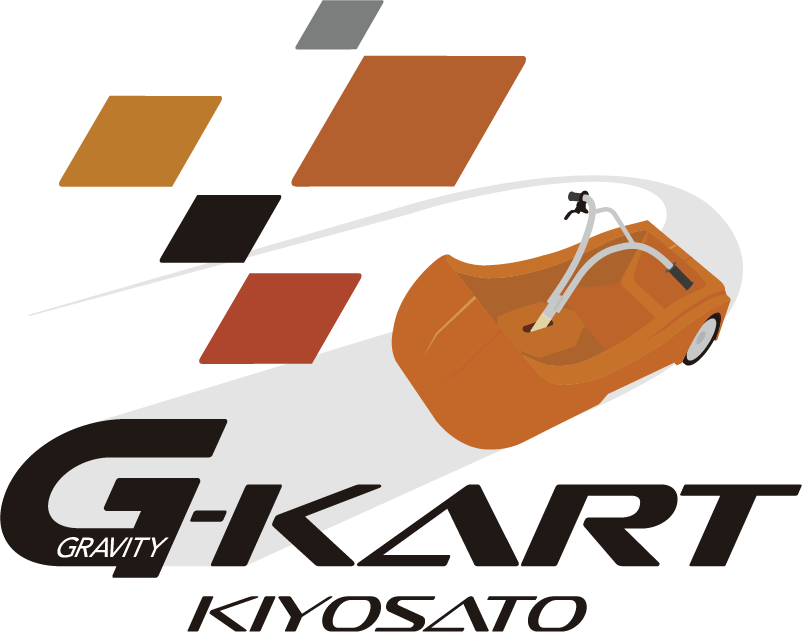
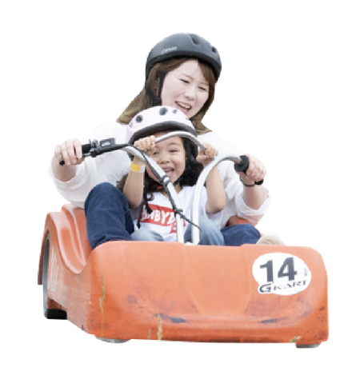
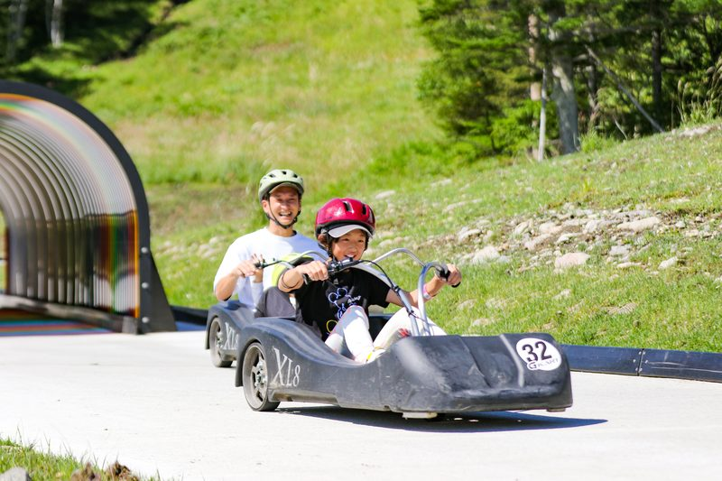
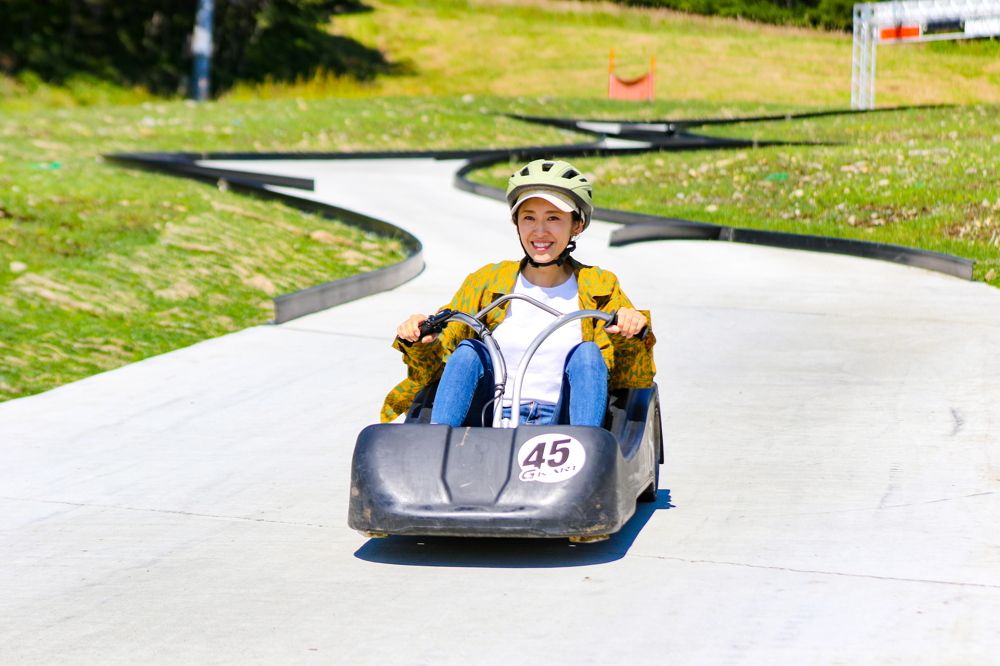
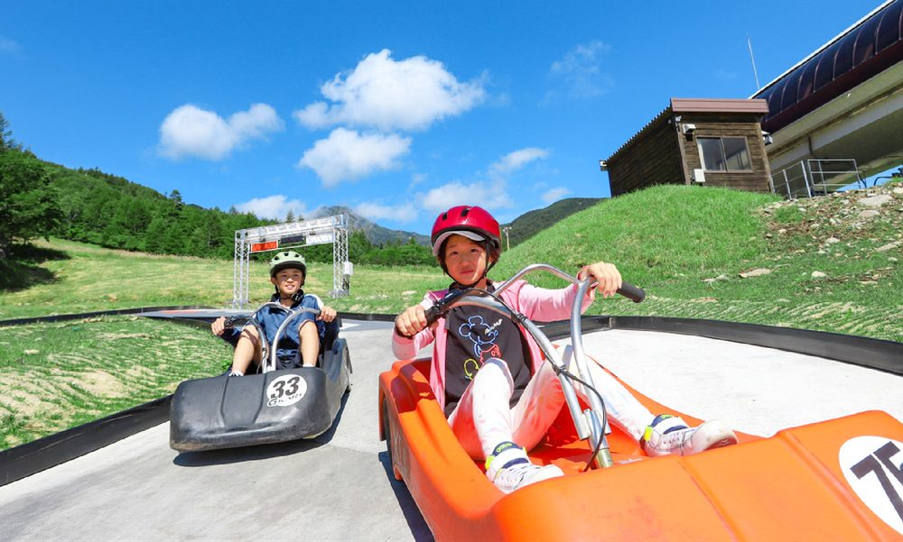
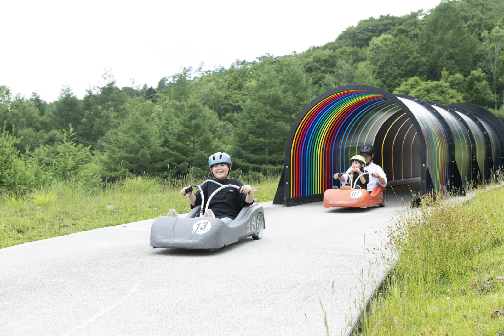
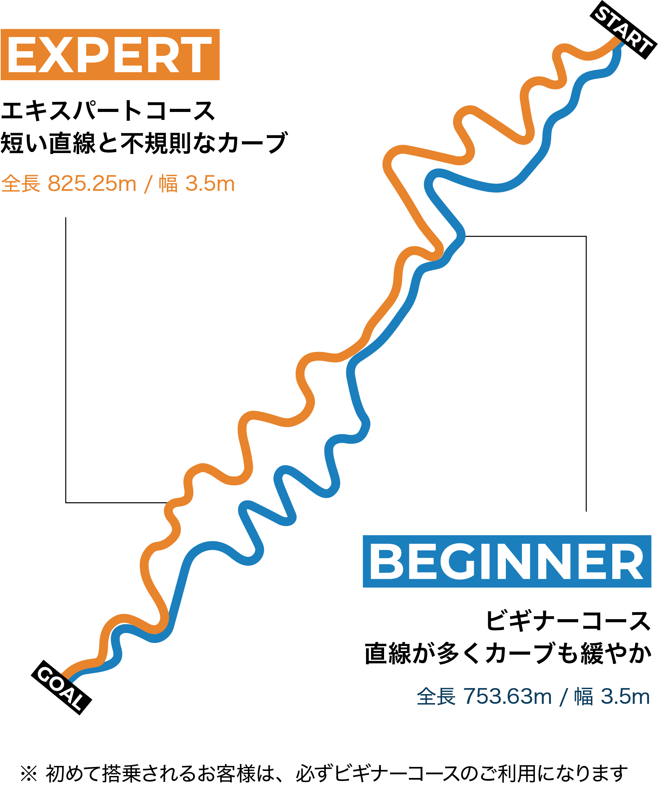
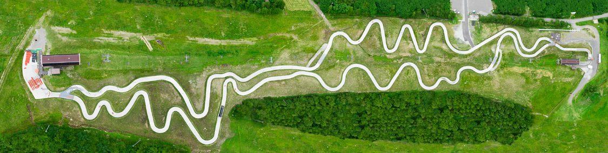
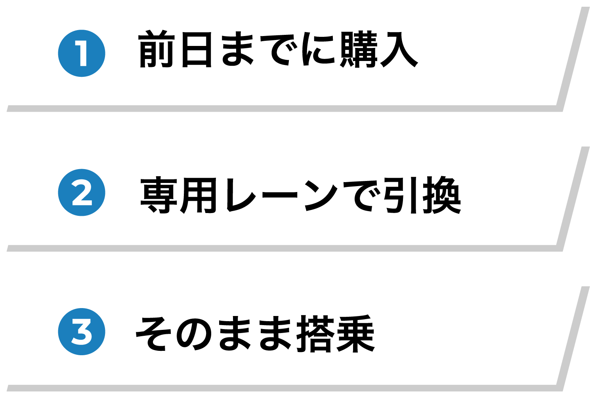

-
3歳から
同乗OK! -
小学
3年生から
一人乗り!
※身長120cm以上
いち度乗ったら
やめられない。
絶景爽快ライド。
標高約1,700mの山頂から、
動力を持たないカートで一気に駆けおりる。
- 約1,700m
- 約30km/h
- リフト券込み
みんな、
夢中になる。

標高1,700mを、駆けおりる休日。

大人も楽しむスピード感
はじめての
「自分で運転」。

降りてきたときの顔が、少しだけ大人になっています。
初めての方も、何度も乗っている方も。
楽しみ方は無限大です。
G-KARTの搭乗条件
年齢から、乗り方が決まります。

| 年齢 | 乗り方 | 料金 |
|---|---|---|
| 3歳〜未就学児 | 同乗 | 3,200円 |
| 小学1・2年生 | 同乗 | 3,400円 |
| 小学3年生〜 | ひとりで | 4,400円〜 |
| 中学生〜大人 | ひとりで | 5,000円〜 |
手の大きさが心配な方へ
チケット売場付近に実機を展示しています。ご購入前にブレーキを握って確かめられます。
- 乗車条件は小学3年生以上、身長120cm以上両方満たす必要があります。
- 子ども同士での同乗は、安全上お受けできません
- 同乗のお子様にも、タンデム券が必要です
- 初めての方は必ずビギナーコースから
初めての人にも、
攻めたい人にも。
※ 初めて搭乗されるお客様は、必ずビギナーコースのご利用になります


カートについて
- 全長
- 1,500㎜
- 全幅
- 640㎜
- 全高
- 330㎜
- 質量
- 35kg
- 車輪
- 3輪
NZ Luge cart World社製 LX8
- 定員
- 2名 3歳以上身長120cm以下の子供と
- ブレーキ
- 油圧式ディスクブレーキ
- ボディ
- ポリプロペン製/UV保護
- 体重制限
- 120kgまで(同乗の場合も合計)
- 最高スピード
- 約30km/h
こうして、
安全は守られています。
初めてのお子様が、安全に降りてこられるように。
- 搭乗前
レクチャー - ヘルメット
無料 - 係員が
見ています
安全のため、係員の指示や標識、掲示されている注意などに従って搭乗ください。
- 搭乗時はヘルメットを装着してください（無料でお貸しいたします）。ご自身のヘルメットをご利用になる場合はお客様の責任でご利用ください。
- 飲酒もしくはアルコール、薬物を摂取をされている方の搭乗はお断りいたします。
- スピードの出し過ぎ等、お客様ご自身と周囲の安全には十分配慮してお楽しみください。
- 理由なくコースの途中で停止をしたりカートから降りてコースに立つなどの行為はやめてください。
- カート本体もしくはコースを故意に損傷させるような行為や走行はしないでください。
- 雷の発生や悪天候などの理由により、営業を中止又は中断する場合がございます。
- 無断でコース内に立ち入ることは禁止です。決められた場所での見学をお願いいたします。
- 走行中に事故などに遭遇した場合には速やかにお知らせください、また事故の調査にご協力をお願いいたします。
料金
（すべてリフト券込み）
| 券種 | 大人 | 子供 | 前売り |
|---|---|---|---|
| 乗車券 | 5,000円 | 4,400円 | - |
| 3回乗車 | 6,000円 | 5,400円 | 5,000円〜 |
| 5回乗車 | 7,000円 | 6,400円 | 5,800円〜 |
| タンデム | 3,400円 | 3,200円 | 3,300円〜 |

よくあるご質問
サンダルでも大丈夫ですが靴が一番望ましいです。リュックなど背負う物はリフト山麓にある荷物置きに置くか抱えるようにして乗車してください。
ヘルメットは大人用、子供用とあり ダイヤルがついているのでフィットさせることができます。 マイヘルメットも可能です。
シェアすることはできません。購入した券は一人でご利用ください。
撮影は禁止です。周りのお客様が映りこむ可能性や乗車中片手になるとG-KARTが操作できなくなったり、コース内に止まって撮影するなどがあり危険です。
タンデムする大人の回数に準じますのでタンデム券1枚で大人3回券をお持ちであれば3回、5回券であれば5回乗車できます。
リフト券をお持ちであればフラワーリフトを1往復することができますのでスタート位置まで一緒に行きリフトで降りることが1回できます。
リフト券をお持ちでない場合はゴールエリアで待つことができます。
チケット約款
- チケットは購入当日のみ有効です。発行したチケット、途中まで使用したチケットの払い戻しは致しません。購入時に券種等をご確認の上お買い求めください。
- 使用途中のチケットの譲渡は禁止です、購入したご本人様のみ有効です。
- チケット等を紛失した場合の再発行は致しません。（リストバンドチケットのため一度外したものは無効になります。）
- 営業時間
- 9:30〜17:00
- お問い合わせ
- 0551-48-4111